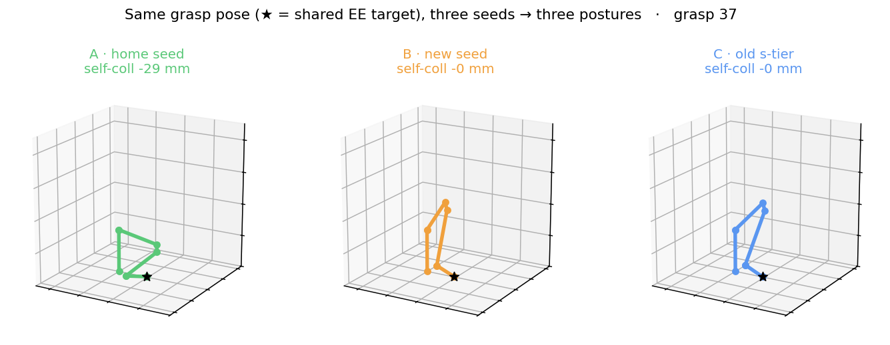
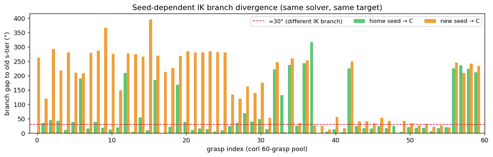
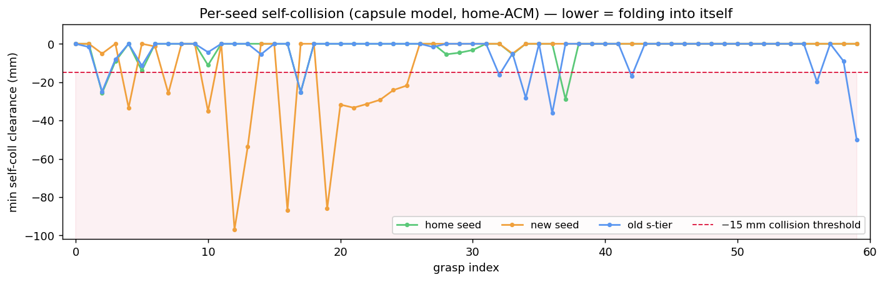

How a fixed EE grasp pose maps to different joint solutions depending on the IK seed — and how to detect the self-folding branches before they reach sim. Built on corl_mug grasp poses from the VLA data-gen pipeline. · 2026-05-25
jaxmp.solve_ik is a local solver, so which solution it returns is decided by the seed it starts from. The runner's --dual-seed-ik exploits this: solve from both home and the pre-baked s-tier config, then keep the better branch. This doc visualizes that effect across the 60-grasp pool and adds a capsule self-collision check to flag the bad branches.
Every arm below is driven to the same gripper pose (★) with the same solver — only the IK seed differs. At this grasp the home seed lands a collapsed branch that folds the wrist back toward the base (self-collision −29 mm), while the s-tier-style seeds reach a clean extended posture.

qs). ★ = shared EE target.Branch gap = joint-space distance to the old s-tier solution after the runner's ±360° unwrap. Above ≈30° the seed has landed a genuinely different IK branch (not just elbow swivel).

Minimum signed capsule clearance (jaxmp RobotColl); lower = the arm is folding into itself. The threshold separates real folds from capsule grazing.

Reconstructed from the data-gen pipeline (validated <0.06 mm vs the pre-baked IK table):
T_a_eef = inv(T_arm) @ traj_mug[sample, t] @ T_grasp_body[g] @ trans(0,0,-TCP_OFFSET)
# TCP_OFFSET = 0.172 m · T_arm, traj_mug, T_grasp_body from corl_mug/{perturb_sweep_trajectories,grasps/corl_mug_ik_table}.npz_solve_anchor)Same jaxmp.solve_ik call, same rest pose (home), same weights — only initial_pose changes. The local solver descends to whichever branch is nearest the seed.
JointVar = RobotFactors.get_var_class(kin, q_home8) # rest = HOME
ik_w = [100,100,100, 5,5,5]
q = solve_ik(kin, target_SE3, [eef_idx], seed8, JointVar, ik_w,
rest_weight=0.01, limit_weight=100.0, max_iterations=80)
# seed8 = home → branch A seed8 = qs[g] (s-tier) → branch C
# runner then unwraps the s-tier branch toward home and keeps it if it reaches the poseContrast with null-space biasing (q̇ = J⁺·twist + (I−J⁺J)·k(q_bias−q)): that stays within one branch and only slides the redundant elbow. Seeding selects the branch. See view_nullspace_bias_corl.py for the within-branch version.
jaxmp RobotColl wraps each link in a capsule. The raw model false-positives on the gripper parallel-linkage and adjacent links, so we build an Allowed-Collision-Matrix from the home pose (a known collision-free config) and ignore any pair grazing there.
rc0 = RobotColl.from_urdf(urdf)
Dh = pairwise_capsule_dist(rc0.at_joints(kin, home8)) # distances at home
ignore = [(a,b) for a,b in checked_pairs if Dh[a,b] <= 0.020] # 38 capsule pairs
robot_coll = RobotColl.from_urdf(urdf, self_coll_ignore=ignore)
clearance_mm = robot_coll.self_coll_dist(kin, cfg8) * 1000 # <0 = penetrationpython-fcl / trimesh.collision, already used by interactive_collision_xarm.py).
# 3-seed comparison over the 60 grasps (home / new / old-s-tier) + self-coll column
python view_dual_seed_grasps_corl.py \
--seed-b-rad "0.4281,0.2136,-0.5048,0.1921,3.0058,1.5553,-0.2338" --port 8080
# within-branch null-space biasing (home vs s-tier elbow swivel)
python view_nullspace_bias_corl.py --port 8080
# gizmo EE editor: JParse vs jaxmp side-by-side, save poses
python view_gizmo_ik_compare_corl.py --seed-rad "0.4281,...,-0.2338" --port 8080
# regenerate the figures in this doc (headless, CPU)
JAX_PLATFORMS=cpu python generate_dualseed_figs.py| Script | What |
|---|---|
view_dual_seed_grasps_corl.py | 3 arms, same grasp, seeds = home / new / old-s-tier; grasp+frame sliders; per-arm pos/rot, branch gap→C, self-coll(mm) + ⚠️ |
view_nullspace_bias_corl.py | within-branch null-space bias toward home vs s-tier (2-phase: converge then null-descend) |
view_gizmo_ik_compare_corl.py | drag-gizmo EE target, JParse vs jaxmp solvers, 💾 save both configs |
generate_dualseed_figs.py headless | the 3 figures above + sweep_stats.npz |
The runner already does the dual-seed branch select in xarm7_runner_v2.py:_solve_anchor (with --dual-seed-ik). To finish wiring the collision gate into data-gen:
robot_coll once (home-ACM) alongside kin at runner init._solve_anchor, after computing the home- and s-tier-seeded branches, prefer the one that (a) reaches the pose and (b) has self_coll_dist > threshold — fall back to lower pos-err only if both collide.--reject-arm-table-collision path.